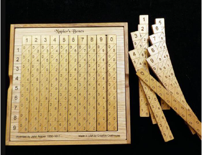
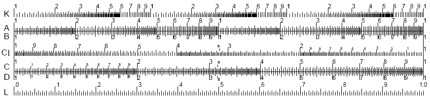

De acordo com Gadelha John Napier inventou algo similar a uma tabela de multiplicação, e foi a partir dessa invenção que surgiram as réguas de cálculo por volta de 1620 que foram antecessoras das atuais calculadoras de bolso. Gadelha (2005). Conforme Miranda, o famoso Isaac Newton, nascido em 1643, despertou grandes desafios matemáticos com sua teoria da gravidade. A época, os cálculos para essa teoria eram de extrema complexidade, de maneira tal que com o tempo, um grande número de cientistas começou a pensar em fazer estes cálculos através de alguma máquina. Miranda (2008)

